1. Ürün verisi
Ürün adı, barkod, fiyat ve kampanya bilgileri ERP/POS sisteminden API veya uygun dosya aktarımıyla alınabilir. Bağlantı yöntemi teknik incelemede netleşir.
Elektronik raf etiketi (ESL), ürün adı ve fiyatı gibi bilgileri raftaki dijital ekranda gösterir. Dijital raf etiketi olarak da bilinen bu sistemde güncellemeler merkezi yazılım ve gateway üzerinden etiketlere aktarılır. FI Teknoloji, etiket ölçüsünü, montajı ve mevcut ERP/POS yazılımınızla veri akışını projenize göre planlar.
1.54–7.50 inç seçeneklerini aşağıda karşılaştırın. Gösterilecek bilgi, okuma mesafesi ve raf yapısı, uygun ekran boyutunu ve tutucuyu belirler.
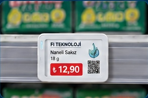
Dar raflar ve kompakt ürün yüzeyleri.
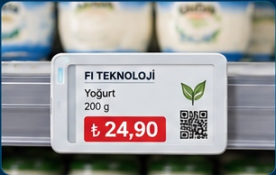
Fiyat ve temel ürün bilgileri için kompakt ekran alanı.
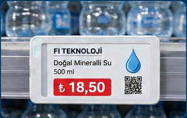
Daha geniş bilgi alanı ve kampanya gösterimi.
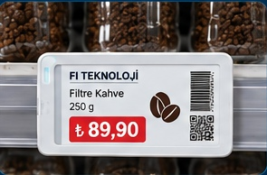
Fiyat, barkod ve ek ürün detayları için dengeli alan.
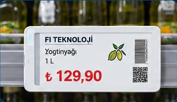
Daha büyük fiyat ve kampanya sunumları.
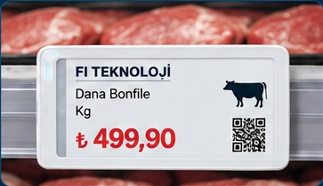
Geniş formatlı reyon ve taze gıda uygulamaları.
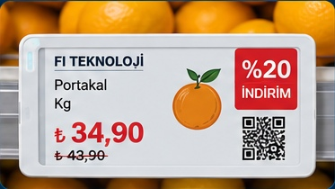
Tanıtım, manav ve büyük format fiyat/künye ekranları.
FI Teknoloji tarafından hazırlanan etiketlerde ürün adı, fiyat ve birim fiyat gibi bilgilerin farklı ekranlarda nasıl yerleştirildiğini inceleyin. Şablon, gösterilecek bilgiye ve seçilen ekran ölçüsüne göre düzenlenir.
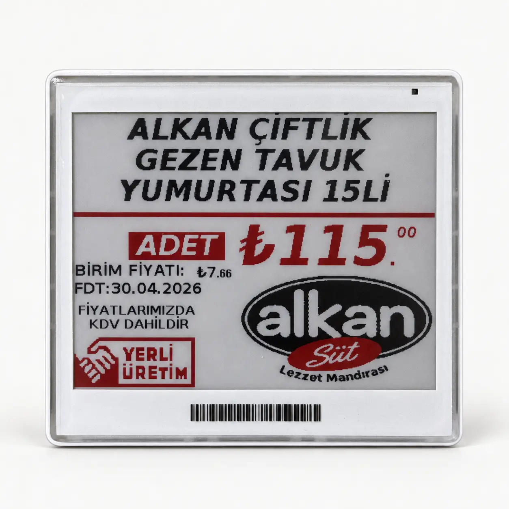
Ürün adı, adet fiyatı ve birim fiyat alanlarını bir araya getiren elektronik raf etiketi örneği.
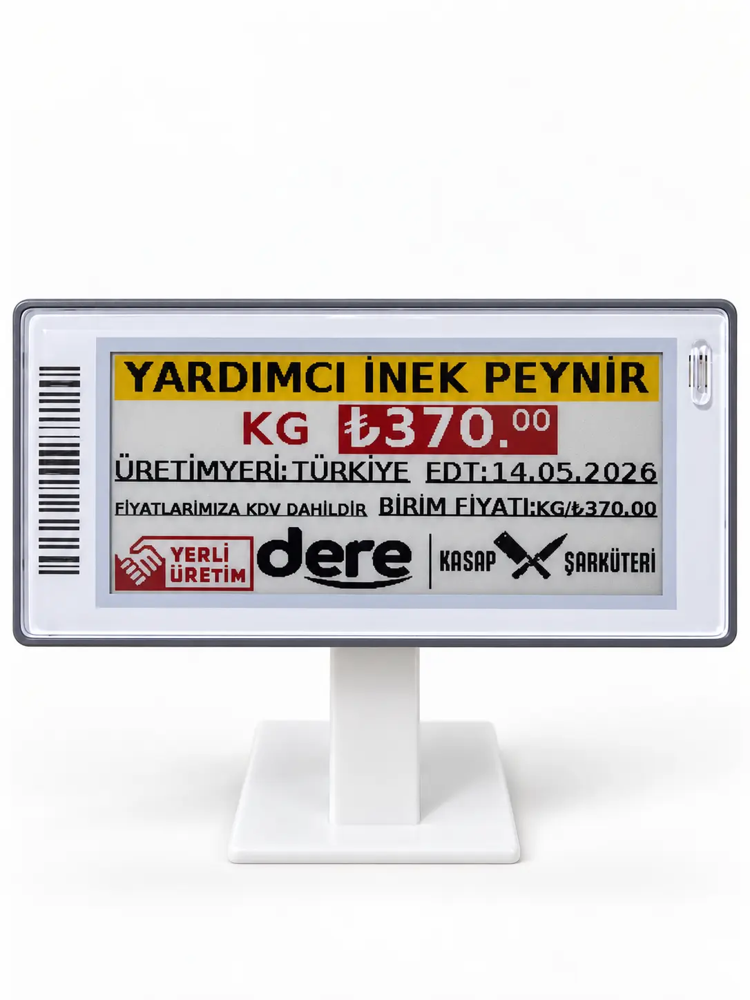
Ürün adı ve kilogram fiyatının öne çıktığı, masaüstü tutuculu etiket tasarımı.
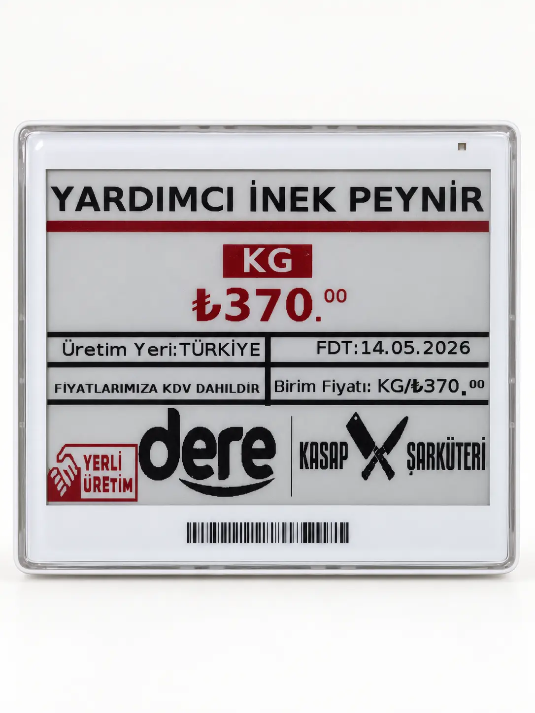
Ürün adı, kilogram fiyatı ve ek bilgi alanlarının geniş ekranda gösterim örneği.
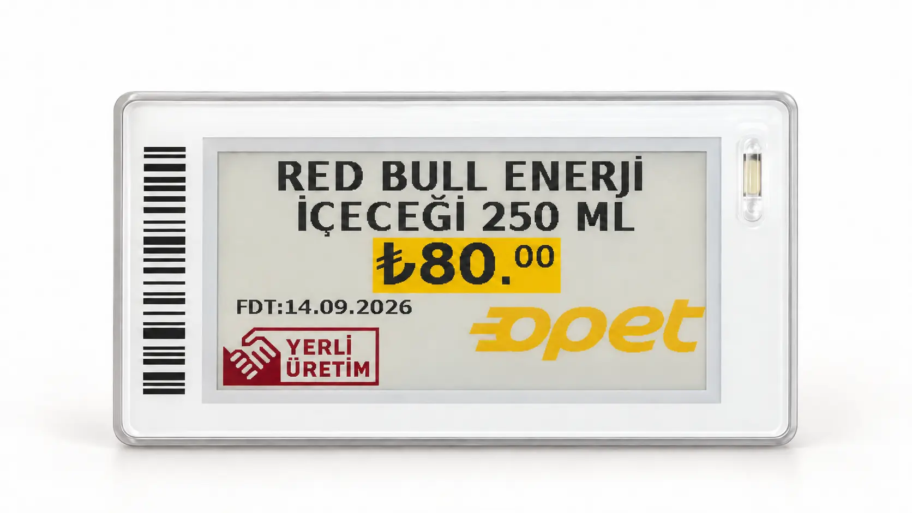
Ürün adı, hacim ve fiyat bilgisini birlikte gösteren dijital raf etiketi örneği.
Görsellerdeki ürün adları ve fiyatlar tasarım örneğidir; güncel satış teklifi değildir. Fotoğrafların arka planı ve ışığı sunum için düzenlenmiştir. Bu bölüm bir müşteri referansı veya tamamlanmış kurulum listesi değildir.
Hazırladığımız etiket tasarımlarının yumurta rafı, şarküteri reyonu ve içecek dolabında nasıl konumlandırılabileceğini inceleyin.
Raf sahneleri, etiket fotoğraflarımız kullanılarak oluşturulmuş örnek uygulama görselleridir; gerçek mağaza kurulumu fotoğrafları değildir. Görsellerdeki fiyatlar örnektir.
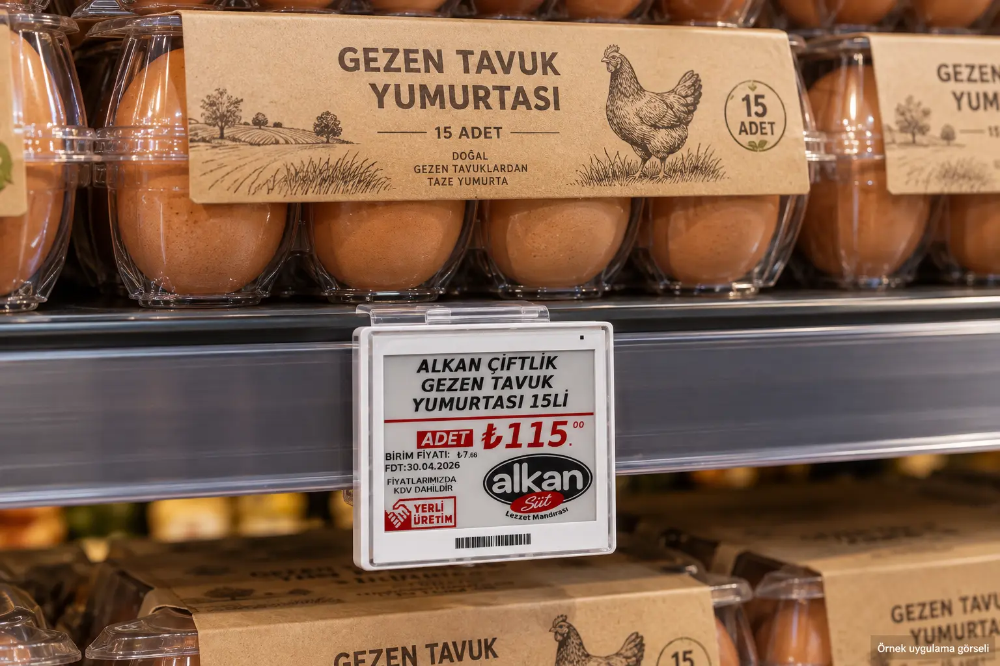
15’li yumurta paketlerinin önünde ürün adı, paket fiyatı ve birim fiyat alanlarını gösteren raf yerleşimi.
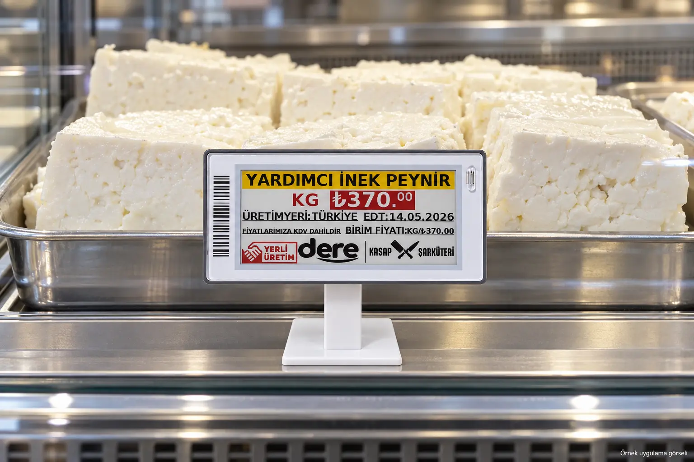
Kilogramla satılan beyaz peynir için standlı dijital raf etiketi yerleşimi.
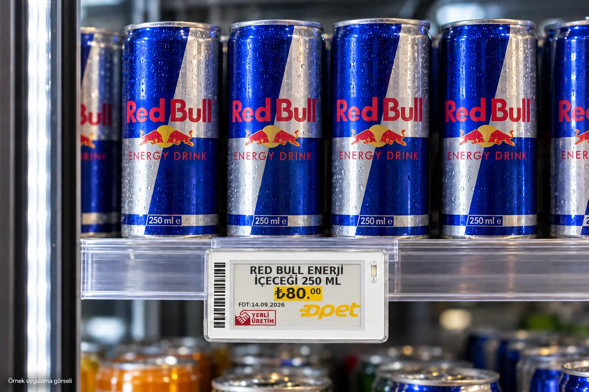
250 ml içecek kutularının altında, raf kenarına yerleştirilmiş elektronik fiyat etiketi.
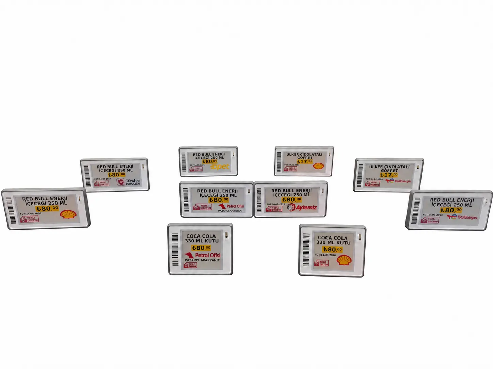
Opet, TotalEnergies, Petrol Ofisi ve Aytemiz logolarının etiket şablonunda yer aldığı tasarım örnekleri.
Marka logoları etiket tasarımını göstermek amacıyla kullanılmıştır; bu bölüm ana markalarla kurumsal iş ortaklığı veya referans ilişkisi bildirmez.
Dijital raf etiketi olarak da anılan ESL sisteminde ürün ve fiyat bilgisi, mağazadaki etikete merkezi yazılım ve gateway aracılığıyla aktarılır. Güncellemenin yöntemi, mevcut yazılımın sunduğu veri bağlantısına göre belirlenir.
Ürün adı, barkod, fiyat ve kampanya bilgileri ERP/POS sisteminden API veya uygun dosya aktarımıyla alınabilir. Bağlantı yöntemi teknik incelemede netleşir.
Ürünler doğru etiketlerle eşlenir; güncelleme mağazadaki gateway üzerinden ilgili etiketlere iletilir. Şube ve raf yapısı gateway ihtiyacını etkiler.
Elektronik etiket, tanımlanan şablona göre yeni fiyatı ve ürün bilgisini gösterir. İşletmeye uygun şablon ve bilgi alanları kurulumda seçilir.
Ekran ölçüsü, ürün adının uzunluğu, gösterilecek fiyat bilgisi ve etiketin takılacağı raf birlikte değerlendirilir. Yukarıdaki model ölçüleri bu seçim için başlangıç noktasıdır.
Ürün ve kampanya değişikliklerini merkezden yönetmek, farklı reyonlardaki fiyatları güncel tutmak için etiket ve tutucu seçimi yapılır.
Sektörleri incele →Market rafları, içecek dolapları ve kasa önü ürünleri için montaj biçimi ve mevcut POS verisinin aktarım yolu ayrı ayrı incelenir.
Bağlantı seçenekleri →Kg fiyatı, üretici ve ürün künyesi gibi alanlar daha geniş etiketlerde sunulabilir. QR ve HKS alanlarının kapsamı veri kaynağına göre belirlenir.
HKS çözümünü incele →FI Teknoloji; elektronik raf etiketi seçimi, kurulum, ERP/POS veri aktarımı planlaması ve teknik destek konularında proje bazlı hizmet sunar.
Babaeski / Kırklareli merkezli FI Teknoloji ile Trakya’daki mağazanızın etiket, montaj ve veri aktarımı ihtiyaçlarını görüşebilirsiniz. Kurulum kapsamı ve destek koşulları proje değerlendirmesinde netleştirilir.
Toplam maliyet yalnızca etiket adedinden oluşmaz. Ekran boyutu, gateway sayısı, raf tutucuları, yazılımın yıllık kullanım bedeli, seçilen bulut hizmetinin aylık bedeli, kurulum ve gerekiyorsa ERP/POS bağlantısı birlikte hesaplanır.
Bu sayfada iki ad aynı ESL çözümü için kullanılır. Ürün ve fiyat bilgileri, merkezi yazılım ve gateway aracılığıyla raftaki elektronik etikete aktarılır.
Önce kullandığınız ERP/POS yazılımının veri çıkışı incelenir. Desteklenen API veya dosya aktarımı varsa bağlantı buna göre projelendirilir; her yazılımla hazır entegrasyon vaat edilmez.
Raf genişliği, okunacak mesafe ve etikette yer alacak alanlara bakılır. Kompakt raflar ile fiyat ve ürün künyesinin birlikte gösterildiği reyonlar farklı ekran alanı ister.
Şube sayısı, yaklaşık etiket adedi, raf tipi, kullanacağınız yazılım ve kurulum yeri ilk hesap için yeterli başlangıç bilgileridir.